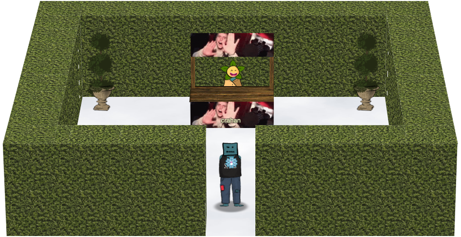
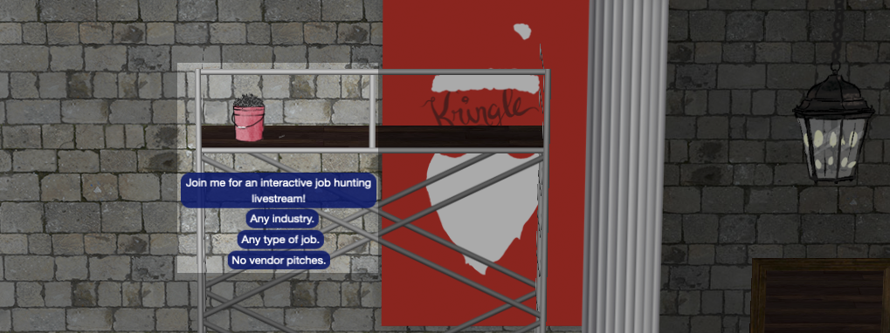
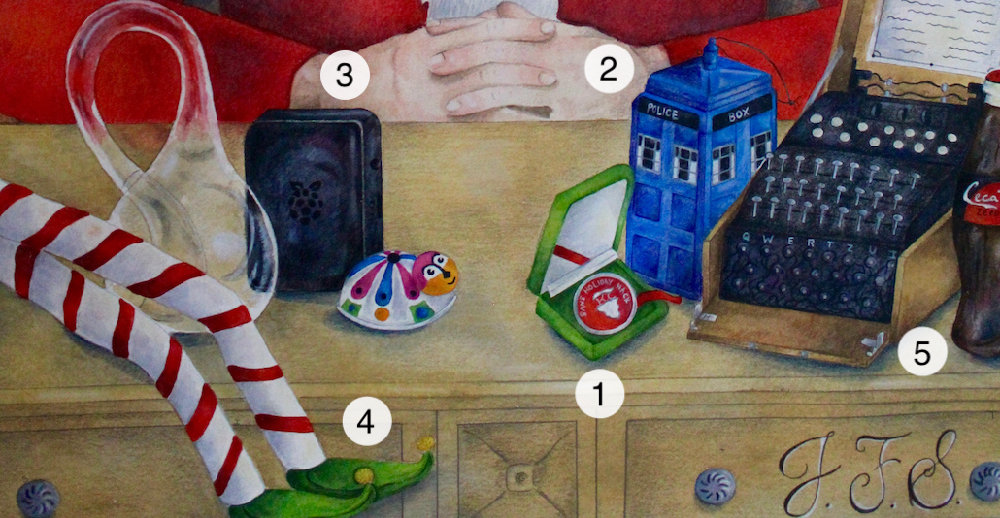
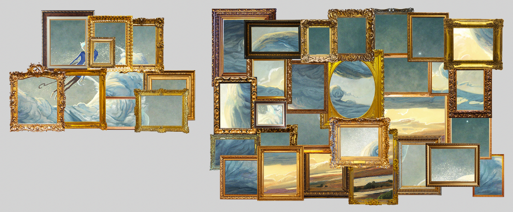
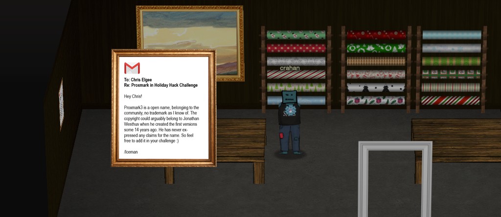
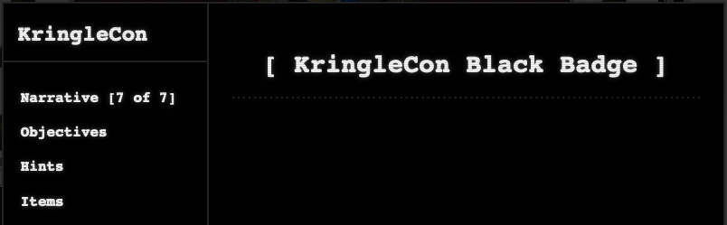
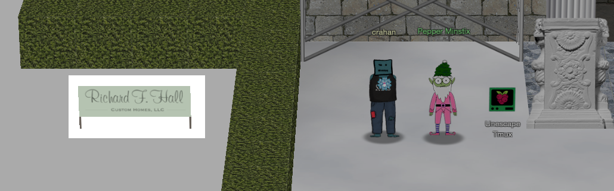

Easter Eggs
It's amazing how many references and easter eggs you can find once you start looking around for them. Movie references, jokes, nods to popular culture, memes, secret areas, references to past Holiday Hack Challenge, and funny WebSocket response messages. Below are a few of them, in no particular order.
Three French Hens⚓︎
When the title of this year's event was announced on Twitter a pattern emerged. Last year was named KringleCon 2: Turtle Doves, this time it's KringleCon 3: French Hens. The titles appear to be taken from the Twelve Days of Christmas carol.
The Twelve Days Of Christmas
...
On the second day of Christmas
My true love gave to me:
Two turtle doves
...
On the third day of Christmas
My true love gave to me:
Three french hens
...
On the forth day of Christmas
My true love gave to me:
Four calling birds
...
Being John Malkovich⚓︎
The idea of going to an in-between floor (i.e., 1.5) and ending up in the body of another person (i.e., Santa) is a direct reference to the movie Being John Malkovich. In the movie, directed by Spike Jonze and written by Charlie Kaufman, a puppeteer discovers a portal on a floor between the 7th and 8th that leads literally into the head of movie star John Malkovich, similar to how we go to a floor between the 1st and 2nd floors and ultimately end up being Santa.
New Jersey Turnpike⚓︎

When the Holiday Hack Challenge website tells you to hop on the New Jersey Turnpike to get to Santa's gondola for your ride to the North Pole, you can take that pretty literally. Taking exit 7A and following Interstate 195 to Shore Points, brings you close to the Counter Hack HQ, better known as Santa's castle. 
The New Jersey Turnpike also plays a key role in the movie Being John Malkovich. It's where the movie's main character ends up when he's ejected from John Malkovich's mind and body after about 15 minutes.
Zat You, Santa Claus?⚓︎
A reference to Zat You, Santa Claus? by Louis Armstrong.
Garden Party⚓︎

To the North and slightly off to the East of the swag booth you can pass through the hedge to enter a secret area. The NPC behind the booth is named npc-evanbooth, Counter Hack's resident builder, architect, developer, and challenge designer. The clip that's playing is the original video for what later became the Dimitri Finds Out meme. You can't go there as Santa though.
Santa Discounts⚓︎
When you talk to the SANS.edu and RSA Conference booth NPCs as Santa, they'll give you a discount code. Also, the NPCs manning the conference booths all have actual names. Can we get a round of applause for Brian, Peaches, Geek, Jeff, and Kulj, please? 
Geek - SANS.edu booth
Hi Santa!
Because you give so much to the world, we’re giving you a code to waive your application fee to SANS.edu, the best college in cybersecurity.
Use the code SantaGoesToCollege when you apply.
Thanks for hacking for good!
Kulj - RSA Conference booth
Congratulations, Santa! You’ve unlocked $20 off a Full Summit Pass for the new RSAC 365 Virtual Summit.
Use code 10SANSF59. Click to learn more.
Jason⚓︎

Just like last year's event, Jason can be found in 2 different locations. First as the nail next to the bucket image named jason 2.png on the scaffolding in front of the castle and again as an ASCII art image of a plant located at /opt/plant.txt. The ASCII image can also be found when entering plant as a menu option in the Kringle Kiosk Terminal Hint challenge.
Hi, my name is Jason the Plant!
( U
\| )
__|/
\ /
\__/ ejm96
Jason himself actually tweeted a hint for this Easter Egg on December 25, 2020.
Nail
Job Hunting? Feeling Stuck?
Join me for an interactive job hunting livestream!
Any industry.
Any type of job.
No vendor pitches.
Not selling anything.
Just helping.
https://www.twitch.tv/banjocrashland
Portrait Painting⚓︎

The portrait features Ed Skoudis as Santa Claus and was painted by Ed's artist daughter Jessica Skoudis (who is also mentioned in the final credits). The initials on the portrait not only refer to Jack Frost: Santa, as per the narrative, but are in fact Jessica's initials. The items on the desk are references to past Holiday Hack Challenge events.
| # | Item | Holiday Hack Challenge |
|---|---|---|
| 1 | Challenge coin | First introduced as an award in HHC 2019 |
| 2 | Tardis | Seen on the dorm wall in HHC 2019 |
| 3 | Cranberry Pi | First appeared in HHC 2018 |
| 4 | Gnome legs | Also created by Jessica Skoudis and featured in HHC 2015 |
| 5 | Enigma machine | Seen in an image for HHC 2012 |
{kind=link}
Painting Peephole Trope⚓︎
Someone peering through the eyes of a painting is a common TV trope and is used in a lot of movies and TV series. The Scooby-Doo animated series used it extensively, for example.
Scooby-Doo - TV Tropes
It was common for Scooby-Doo to feature a scene of the characters moving past a portrait with moving eyes. A series of Cartoon Network promos for the show titled Scooby-Doo: Behind the Scenes had the characters lampshading the trope in the final promo "Those Meddling Kids, Together Again" and Velma jokingly asking why weren't there any haunted houses with landscape paintings.
Landscape paintings? Perfect segue into the next easter egg! 
Castle Artwork⚓︎

All the artwork spread across Santa's castle is cut from a single image. If you download all the textures from https://2020.kringlecon.com/textures/art/f$i.png, with $i ranging between 1 and 39, you can recreate a Jack Frost painting by Andrew Theophilopoulos.
?file=JackFrost-PicBookWJ.jpg){kind=link}
1 2 3 4 5 6 | |
Looks like Jack Frost replaced all the paintings with artwork of himself! 
Proxmark Email⚓︎

In the Wrapping Room there's an email message hanging on the left wall from Iceman, addressed to Chris Elgee.
Proxmark email
To: Chris Elgee
Re: Proxmark in Holiday Hack Challenge
Hey Chris!
Proxmark3 is a open name, belonging to the community, no trademark as I know of. The copyright could arguably belong to Jonathan Westhus when he created the first versions some 14 years ago. He has never ex- pressed any claims for the name. So feel free to add it in your challenge :)
/Iceman
Black Badge⚓︎

Santa has a black conference badge which is a nod to the DEF CON Black Badge.
DEF CON Black Badge
The DEF CON Black Badge is a powerful talisman, awarded only to those who have emerged unbeaten from the crucible of elite DEF CON competition. Which competitions? The answer varies from year to year. This is in the nature of the talisman. Those chosen by the Badge enter DEF CON free of charge for the duration of their natural life.
Wilhelm Scream⚓︎
In the 33.6kbps Terminal challenge, the SCHHRRHHRTHRTR sound uses the famous Wilhelm Scream.
Snowball Fight Error⚓︎
The error screen when you lose a Snowball Fight game displays a QR code which leads to the CounterHack website and the error code 501_PEBKAC_ERR_4EVA, which translates to Problem Exists Between Keyboard and Chair, Error, and Forever. In other words, user error. Pretty sure that if you contact the support elf and pass them the error code, they'd laugh at you.
WebSocket Codes⚓︎
The WebSocket at wss://2020.kringlecon.com/ws is a lot of fun to mess around with and others have gone above and beyond to write some amazing helper scripts that let you navigate the game without using the web UI. The WS_OHHIMARK and DENNIS_NEDRY WebSocket response codes are references to the movies The Room and Jurassic Park, respectively.
The WS_OHHIMARK response code is a reference to the famous scene from the movie The Room.
The DENNIS_NEDRY error code is a reference to Jurassic Park.
Richard F. Hall⚓︎

The billboard titled Richard F. Hall - Custom Homes, LLC, located next to the scaffolding in front of Santa's castle, is a reference to an actual company in the Jersey Shore area. Looking at their portfolio, it's pretty clear why Santa would choose them to help with the castle expansion. That's some impressive work! 
Stay Frosty Catchphrase⚓︎
Jack Frost isn't the only one who likes to use the Stay frosty catchphrase. It's actually used in a number of movies. The most famous one probably being Aliens where Corporal Hicks, played by Michael Biehn, uses it in a pep talk.
Corporal Hicks - Aliens
Hey! I know we’re all in strung-out shape but stay frosty and alert. We can’t afford to let one of those bastards in here.
Colonel Stars, played by Jim Carrey, also says it in Kickass 2.
Colonel Stars - Kickass 2
Stay frosty team. I used to eat punks like this for breakfast.
Release the Snacken⚓︎
The vending machine's name is a reference to release the Kraken. The kraken is a legendary sea monster of gigantic size and cephalopod-like appearance in Scandinavian folklore. The phrase comes from the 1981 movie The Clash of the Titans (and its 2010 remake) and is known for being a meme as well.
The Lollipop Guild⚓︎
The adversary group that Santa feared would attack KringleCon is a reference to The Wizard of Oz.
Naughty/Nice Reports⚓︎
Dumping the reports from the Naughty/Nice blockchain provides for some hilarious reading. Quite the welcome distraction once you've spent some time on objective 11 and objective 12. Below are just a few of examples from the 1547 reports.
Elf-on-the-shelf #10830630836554719419
Unbelievably, for the second time this year, I saw Shamicka leaving less than a swallow of orange juice in the container and putting it back into the refrigerator.
Elf-on-the-shelf #6203725506778794240
For the second time this month, we spotted Morad referring to someone as "bro".
Elf-on-the-shelf #809598375456514384
We've noticed that Chaquetta seems to be regularly discussing "The Bachelorette" as though it was actually something worthwhile.
Some reports noted some excellent behavior as well though. 
Elf-on-the-shelf #8151363711045738907
Happily, for the second time this year, I saw Hadassah not allowing their IOT devices to be accessible from the internet.
Elf-on-the-shelf #6864795698547819664
Maury was spotted running a marathon and not bragging about it to anyone twice today.
Elf-on-the-shelf #12595432874979467172
Three time now, Banjamin was seen being a vegan, but never making a big deal out of it.